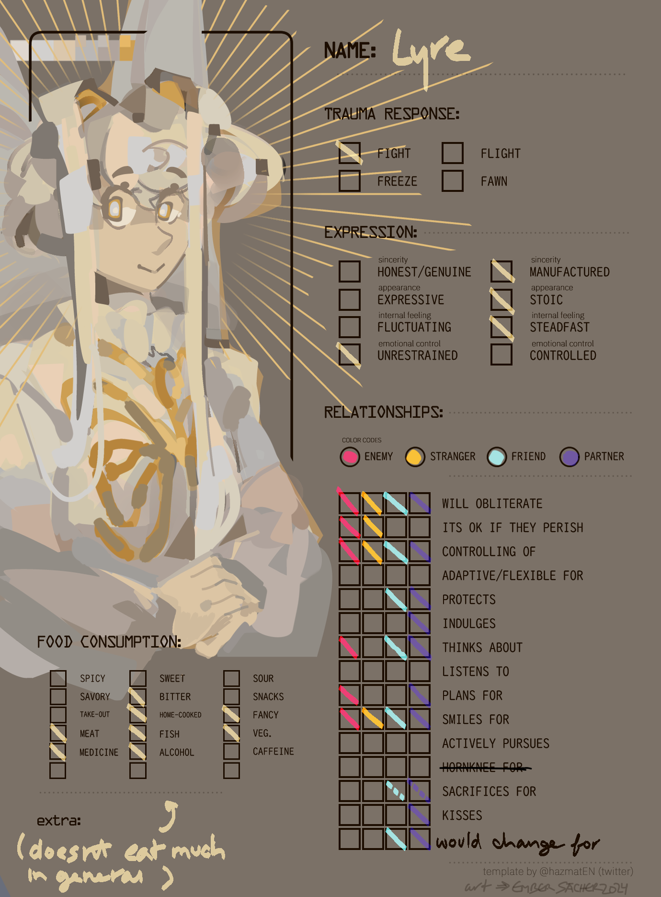

OG template by @hazmatEN on twt

more oc charts
creation date: apr 15
characters featured: (in order) lyre and archer
a continuation of this !
i put significantly more effort into these ones as opposed to the others lol. i barely have any presentable rendered artwork of archer and lyre despite them being the protags of ptc's entire second arc, smh. i really do like them as characters, it's time i give them a lil more love 😴